MapReduce编程模型（二）
1. 自定义分区
1.1 分区原理
根据之前讲的shuffle，我们知道在map任务中，从环形缓冲区溢出写磁盘时，会先对kv对数据进行分区操作
分区操作是由MR中的分区器负责的
MapReduce有自带的默认分区器
- HashPartitioner
- 关键方法getPartition返回当前键值对的分区索引(partition index)
public class HashPartitioner<K2, V2> implements Partitioner<K2, V2> { public void configure(JobConf job) {} /** Use {@link Object#hashCode()} to partition. */ public int getPartition(K2 key, V2 value, int numReduceTasks) { return (key.hashCode() & Integer.MAX_VALUE) % numReduceTasks; } }环形缓冲区溢出写磁盘前，将每个kv对，作为getPartition()的参数传入；
先对键值对中的key求hash值（int类型），与MAX_VALUE按位与；再模上reduce task个数，假设reduce task个数设置为4（可在程序中使用job.setNumReduceTasks(4)指定reduce task个数为4）
- 那么map任务溢出文件有4个分区，分区index分别是0、1、2、3
- getPartition()结果有四种：0、1、2、3
- 根据计算结果，决定当前kv对，落入哪个分区，如结果是0，则当前kv对落入溢出文件的0分区中
- 最终被相应的reduce task通过http获得
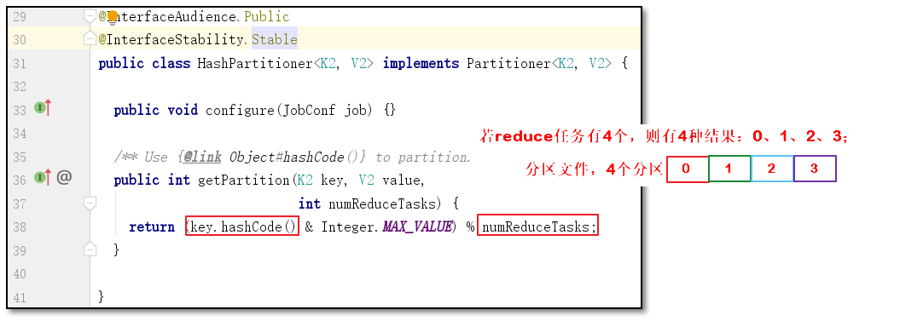
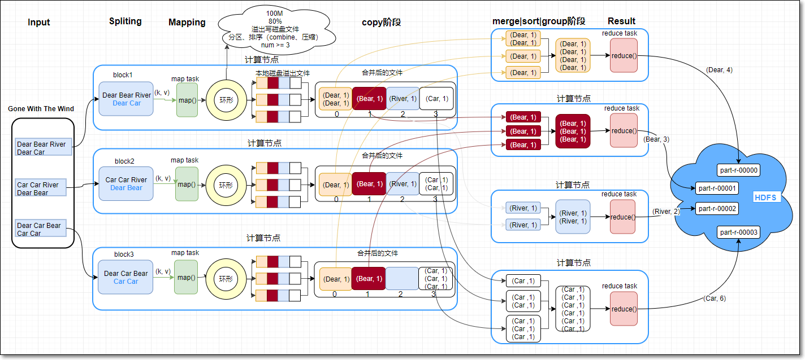
- 若是MR默认分区器，不满足需求；可根据业务逻辑，设计自定义分区器，比如实现图上的功能
1.2 默认分区
程序执行略
代码详见工程com.kaikeba.hadoop.partitioner包
MR读取三个文件part1.txt、part2.txt、part3.txt；三个文件放到HDFS目录：/customParttitioner中
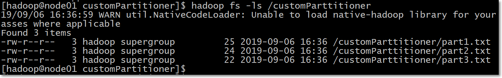
part1.txt内容如下：
Dear Bear River Dear Carpart2.txt内容如下：
Car Car River Dear Bearpart3.txt内容如下：
Dear Car Bear Car Car默认HashPartitioner分区时，查看结果（看代码）
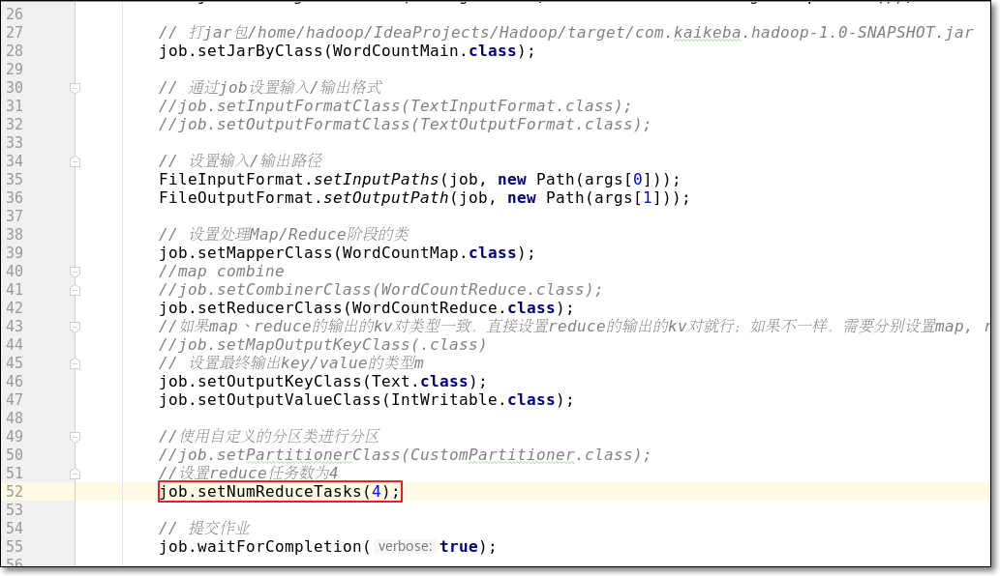
- 运行参数：
/customParttitioner /cp01
- 打jar包运行，结果如下：
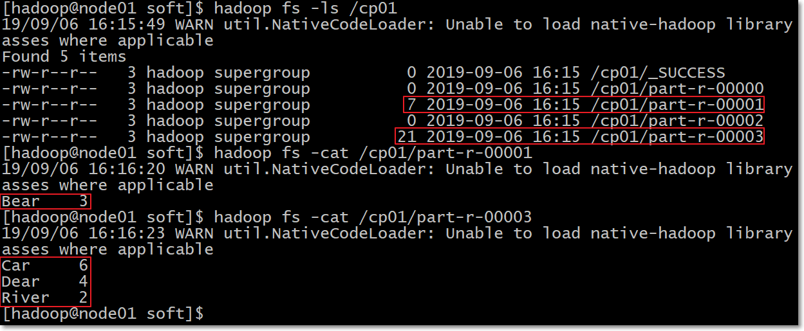
只有part-r-00001、part-r-00003有数据；另外两个没有数据
HashPartitioner将Bear分到index=1的分区；将Car|Dear|River分到index=3分区
1.3 自定义分区
1.3.1 需求
- 自定义分区，使得文件中，分别以Dear、Bear、River、Car为键的键值对，分别落到index是0、1、2、3的分区中
1.3.2 逻辑分析
- 若要实现以上的分区策略，需要自定义分区类
- 此类实现Partitioner接口
- 在getPartition()中实现分区逻辑
- main方法中
- 设定reduce个数为4
- 设置自定义的分区类，调用job.setPartitionerClass方法
1.3.3 MR代码
完整代码见代码工程
- 自定义分区类如下
package com.kaikeba.hadoop.partitioner;
import org.apache.hadoop.io.IntWritable;
import org.apache.hadoop.io.Text;
import org.apache.hadoop.mapreduce.Partitioner;
import java.util.HashMap;
public class CustomPartitioner extends Partitioner<Text, IntWritable> {
public static HashMap<String, Integer> dict = new HashMap<String, Integer>();
//定义每个键对应的分区index，使用map数据结构完成
static{
dict.put("Dear", 0);
dict.put("Bear", 1);
dict.put("River", 2);
dict.put("Car", 3);
}
public int getPartition(Text text, IntWritable intWritable, int i) {
//
int partitionIndex = dict.get(text.toString());
return partitionIndex;
}
}
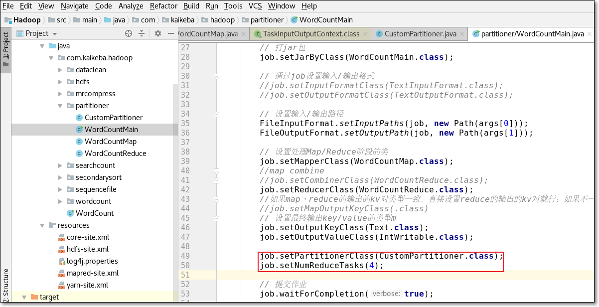
- 运行结果
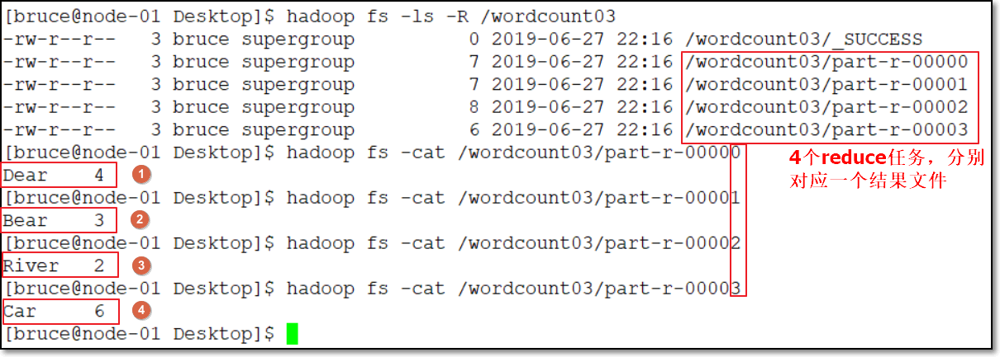
结果满足需求
1.4 总结
- 如果默认分区器不满足业务需求，可以自定义分区器
- 自定义分区器的类继承Partitioner类
- 覆写getPartition()，在方法中，定义自己的分区策略
- 在main()方法中调用job.setPartitionerClass()
- main()中设置reduce任务数
2. 自定义Combiner
2.1 需求
普通的MR是reduce通过http，取得map任务的分区结果；具体的聚合出结果是在reduce端进行的；
以单词计数为例：
- 下图中的第一个map任务(map1)，本地磁盘中的结果有5个键值对：(Dear, 1)、(Bear, 1)、(River, 1)、(Dear, 1)、(Car, 1)
- 其中，map1中的两个相同的键值对(Dear, 1)、(Dear, 1)，会被第一个reduce任务(reduce1)通过网络拉取到reduce1端
- 那么假设map1中(Dear, 1)有1亿个呢？按原思路，map1端需要存储1亿个(Dear, 1)，再将1亿个(Dear, 1)通过网络被reduce1获得，然后再在reduce1端汇总
- 这样做map端本地磁盘IO、数据从map端到reduce端传输的网络IO比较大
- 那么想，能不能在reduce1从map1拉取1亿个(Dear, 1)之前，在map端就提前先做下reduce汇总，得到结果(Dear, 100000000)，然后再将这个结果（一个键值对）传输到reduce1呢？
- 答案是可以的
- 我们称之为combine操作
map端combine本地聚合（本质是reduce）

2.2 逻辑分析
注意：
不论运行多少次Combine操作，都不能影响最终的结果
并非所有的mr都适合combine操作，比如求平均值
参考：《并非所有MR都适合combine.txt》
原理图
看原图
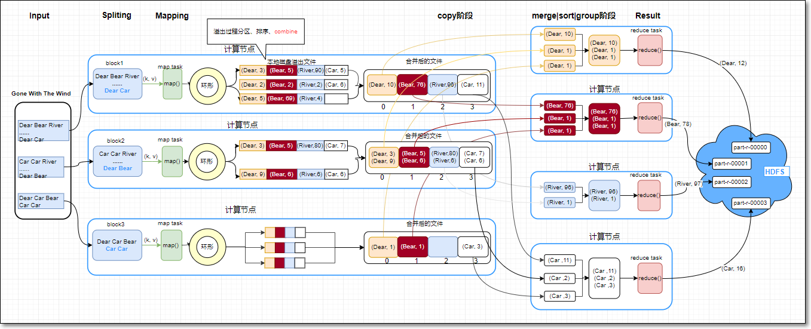
当每个map任务的环形缓冲区添满80%，开始溢写磁盘文件
此过程会分区、每个分区内按键排序、再combine操作（若设置了combine的话）、若设置map输出压缩的话则再压缩
- 在合并溢写文件时，如果至少有3个溢写文件，并且设置了map端combine的话，会在合并的过程中触发combine操作；
- 但是若只有2个或1个溢写文件，则不触发combine操作（因为combine操作，本质上是一个reduce，需要启动JVM虚拟机，有一定的开销）
combine本质上也是reduce；因为自定义的combine类继承自Reducer父类
map: (K1, V1) -> list(K2, V2)
combiner: (K2, list(V2)) -> (K2, V2)
reduce: (K2, list(V2)) -> (K3, V3)
- reduce函数与combine函数通常是一样的
- K3与K2类型相同；
- V3与V2类型相同
- 即reduce的输入的kv类型分别与输出的kv类型相同
2.3 MR代码
对原词频统计代码做修改；
详细代码见代码工程
- WordCountMap、WordCountReduce代码保持不变
- 唯一需要做的修改是在WordCountMain中，增加job.setCombinerClass(WordCountReduce.class);
- 修改如下：
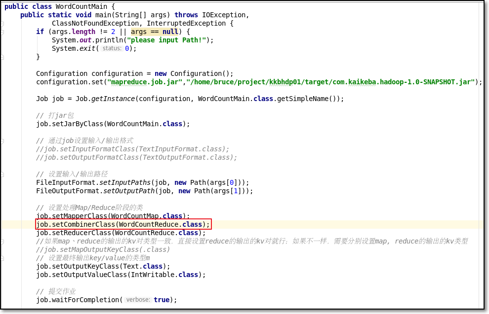
2.4 小结
- 使用combine时，首先考虑当前MR是否适合combine
- 总原则是不论使不使用combine不能影响最终的结果
- 在MR时，发生数据倾斜，且可以使用combine时，可以使用combine缓解数据倾斜
3. MR压缩
3.1 需求
- 作用：在MR中，为了减少磁盘IO及网络IO，可考虑在map端、reduce端设置压缩功能
- 给“MapReduce编程：用户搜索次数”代码，增加压缩功能
3.2 逻辑分析
- 那么如何设置压缩功能呢？只需在main方法中，给Configuration对象增加如下设置即可
//开启map输出进行压缩的功能
configuration.set("mapreduce.map.output.compress", "true");
//设置map输出的压缩算法是：BZip2Codec，它是hadoop默认支持的压缩算法，且支持切分
configuration.set("mapreduce.map.output.compress.codec", "org.apache.hadoop.io.compress.BZip2Codec");
//开启job输出压缩功能
configuration.set("mapreduce.output.fileoutputformat.compress", "true");
//指定job输出使用的压缩算法
configuration.set("mapreduce.output.fileoutputformat.compress.codec", "org.apache.hadoop.io.compress.BZip2Codec");
3.3 MR代码
给“MapReduce编程：用户搜索次数”代码，增加压缩功能，代码如下
如何打jar包，已演示过，此处不再赘述
package com.kaikeba.hadoop.mrcompress;
import org.apache.hadoop.conf.Configuration;
import org.apache.hadoop.fs.Path;
import org.apache.hadoop.io.IntWritable;
import org.apache.hadoop.io.LongWritable;
import org.apache.hadoop.io.Text;
import org.apache.hadoop.mapreduce.Job;
import org.apache.hadoop.mapreduce.Mapper;
import org.apache.hadoop.mapreduce.Reducer;
import org.apache.hadoop.mapreduce.lib.input.FileInputFormat;
import org.apache.hadoop.mapreduce.lib.output.FileOutputFormat;
import java.io.IOException;
/**
* 本MR示例，用于统计每个用户搜索并查看URL链接的次数
*/
public class UserSearchCount {
public static void main(String[] args) throws IOException, ClassNotFoundException, InterruptedException {
//判断以下，输入参数是否是两个，分别表示输入路径、输出路径
if (args.length != 2 || args == null) {
System.out.println("please input Path!");
System.exit(0);
}
Configuration configuration = new Configuration();
//configuration.set("mapreduce.job.jar","/home/hadoop/IdeaProjects/Hadoop/target/com.kaikeba.hadoop-1.0-SNAPSHOT.jar");
//开启map输出进行压缩的功能
configuration.set("mapreduce.map.output.compress", "true");
//设置map输出的压缩算法是：BZip2Codec，它是hadoop默认支持的压缩算法，且支持切分
configuration.set("mapreduce.map.output.compress.codec", "org.apache.hadoop.io.compress.BZip2Codec");
//开启job输出压缩功能
configuration.set("mapreduce.output.fileoutputformat.compress", "true");
//指定job输出使用的压缩算法
configuration.set("mapreduce.output.fileoutputformat.compress.codec", "org.apache.hadoop.io.compress.BZip2Codec");
//调用getInstance方法，生成job实例
Job job = Job.getInstance(configuration, UserSearchCount.class.getSimpleName());
//设置jar包，参数是包含main方法的类
job.setJarByClass(UserSearchCount.class);
//通过job设置输入/输出格式
//MR的默认输入格式是TextInputFormat，所以下两行可以注释掉
// job.setInputFormatClass(TextInputFormat.class);
// job.setOutputFormatClass(TextOutputFormat.class);
//设置输入/输出路径
FileInputFormat.setInputPaths(job, new Path(args[0]));
FileOutputFormat.setOutputPath(job, new Path(args[1]));
// FileOutputFormat.setCompressOutput(job, true);
// FileOutputFormat.setOutputCompressorClass(job, BZip2Codec.class);
//设置处理Map阶段的自定义的类
job.setMapperClass(SearchCountMapper.class);
//设置map combine类，减少网路传出量
//job.setCombinerClass(WordCountReduce.class);
//设置处理Reduce阶段的自定义的类
job.setReducerClass(SearchCountReducer.class);
//如果map、reduce的输出的kv对类型一致，直接设置reduce的输出的kv对就行；如果不一样，需要分别设置map, reduce的输出的kv类型
//注意：此处设置的map输出的key/value类型，一定要与自定义map类输出的kv对类型一致；否则程序运行报错
// job.setMapOutputKeyClass(Text.class);
// job.setMapOutputValueClass(IntWritable.class);
//设置reduce task最终输出key/value的类型
//注意：此处设置的reduce输出的key/value类型，一定要与自定义reduce类输出的kv对类型一致；否则程序运行报错
job.setOutputKeyClass(Text.class);
job.setOutputValueClass(IntWritable.class);
// 提交作业
job.waitForCompletion(true);
}
public static class SearchCountMapper extends Mapper<LongWritable, Text, Text, IntWritable> {
//定义共用的对象，减少GC压力
Text userIdKOut = new Text();
IntWritable vOut = new IntWritable(1);
@Override
protected void map(LongWritable key, Text value, Context context) throws IOException, InterruptedException {
//获得当前行的数据
//样例数据：20111230111645 169796ae819ae8b32668662bb99b6c2d 塘承高速公路规划线路图 1 1 http://auto.ifeng.com/roll/20111212/729164.shtml
String line = value.toString();
//切分，获得各字段组成的数组
String[] fields = line.split("\t");
//因为要统计每个user搜索并查看URL的次数，所以将userid放到输出key的位置
//注意：MR编程中，根据业务需求设计key是很重要的能力
String userid = fields[1];
//设置输出的key的值
userIdKOut.set(userid);
//输出结果
context.write(userIdKOut, vOut);
}
}
public static class SearchCountReducer extends Reducer<Text, IntWritable, Text, IntWritable> {
//定义共用的对象，减少GC压力
IntWritable totalNumVOut = new IntWritable();
@Override
protected void reduce(Text key, Iterable<IntWritable> values, Context context) throws IOException, InterruptedException {
int sum = 0;
for(IntWritable value: values) {
sum += value.get();
}
//设置当前user搜索并查看总次数
totalNumVOut.set(sum);
context.write(key, totalNumVOut);
}
}
}
- 生成jar包，并运行jar包
[hadoop@node01 target]$ hadoop jar com.kaikeba.hadoop-1.0-SNAPSHOT.jar com.kaikeba.hadoop.mrcompress.UserSearchCount /sogou.2w.utf8 /compressed
查看结果
可增加数据量，查看使用压缩算法前后的系统各计数器的数据量变化
[hadoop@node01 target]$ hadoop fs -ls -h /compressed
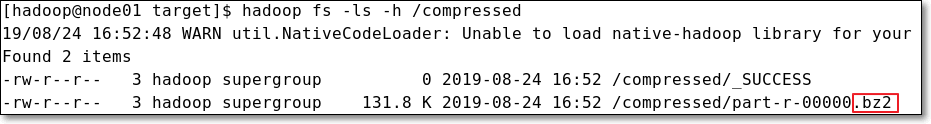
3.4 总结
- MR过程中使用压缩可减少数据量，进而减少磁盘IO、网络IO数据量
- 可设置map端输出的压缩
- 可设置job最终结果的压缩
- 通过相应的配置项即可实现
4. 自定义InputFormat
4.1 MapReduce执行过程
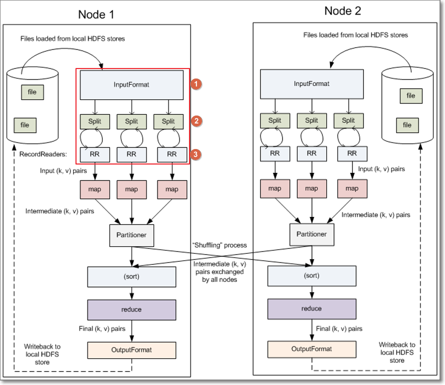
上图也描述了mapreduce的一个完整的过程；我们主要看map任务是如何从hdfs读取分片数据的部分
涉及3个关键的类
①InputFormat输入格式类
②InputSplit输入分片类：getSplits()
- InputFormat输入格式类将输入文件分成一个个分片InputSplit
- 每个Map任务对应一个split分片
③RecordReader记录读取器类：createRecordReader()
- RecordReader（记录读取器）读取分片数据，一行记录生成一个键值对
- 传入map任务的map()方法，调用map()
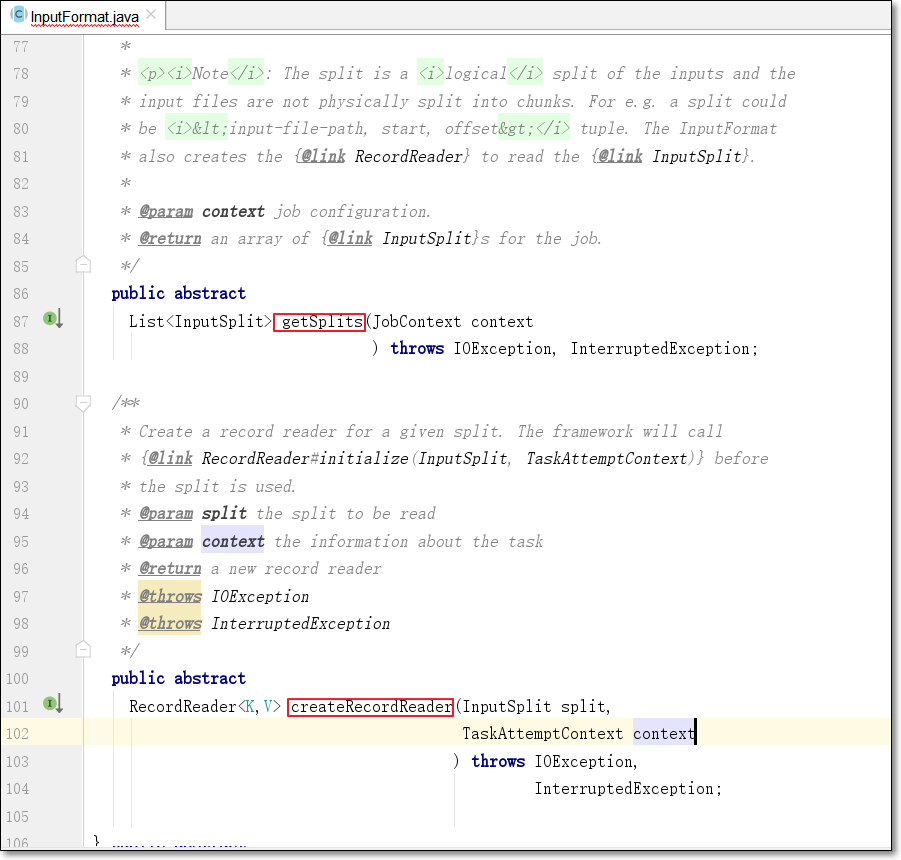
所以，如果需要根据自己的业务情况，自定义输入的话，需要自定义两个类：
- InputFormat类
- RecordReader类
详细流程：
客户端调用InputFormat的getSplits()方法，获得输入文件的分片信息
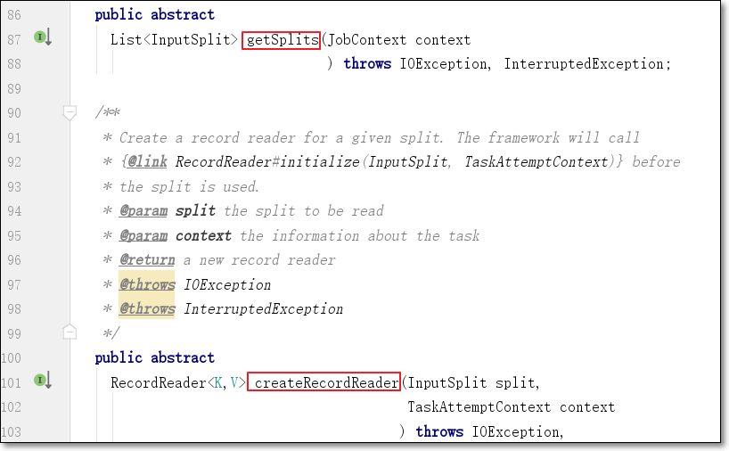
针对每个MR job会生成一个相应的app master，负责map\reduce任务的调度及监控执行情况
将分片信息传递给MR job的app master
app master根据分片信息，尽量将map任务尽量调度在split分片数据所在节点（移动计算不移动数据）
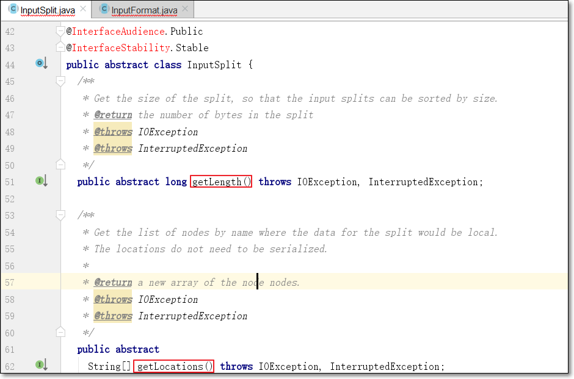
有几个分片，就生成几个map任务
每个map任务将split分片传递给createRecordReader()方法，生成此分片对应的RecordReader
RecordReader用来读取分片的数据，生成记录的键值对
- nextKeyValue()判断是否有下一个键值对，如果有，返回true；否则，返回false
- 如果返回true，调用getCurrentKey()获得当前的键
- 调用getCurrentValue()获得当前的值
map任务运行过程
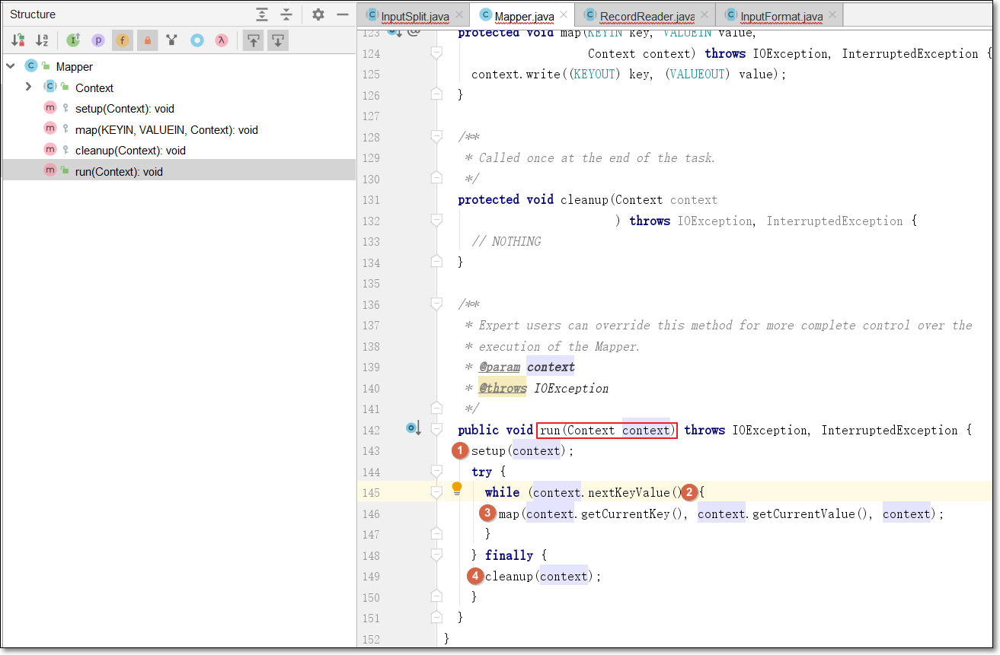
map任务运行时，会调用run()
首先运行一次setup()方法；只在map任务启动时，运行一次；一些初始化的工作可以在setup方法中完成；如要连接数据库之类的操作
while循环，调用context.nextKeyValue()；会委托给RecordRecord的nextKeyValue()，判断是否有下一个键值对
如果有下一个键值对，调用context.getCurrentKey()、context.getCurrentValue()获得当前的键、值的值（也是调用RecordReader的同名方法）
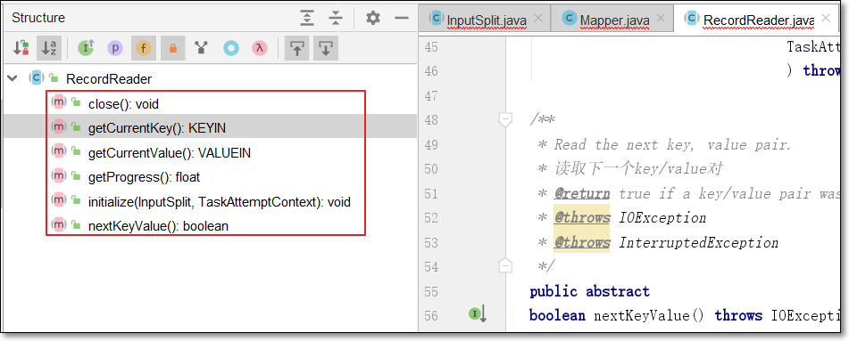
作为参数传入map(key, value, context)，调用一次map()
当读取分片尾，context.nextKeyValue()返回false；退出循环
调用cleanup()方法，只在map任务结束之前，调用一次；所以，一些回收资源的工作可在此方法中实现，如关闭数据库连接
4.2 需求
- 无论hdfs还是mapreduce，处理小文件都有损效率，实践中，又难免面临处理大量小文件的场景，此时，就需要有相应解决方案
4.3 逻辑分析
- 小文件的优化无非以下几种方式：
- 在数据采集的时候，就将小文件或小批数据合成大文件再上传HDFS(SequenceFile方案)
- 在业务处理之前，在HDFS上使用mapreduce程序对小文件进行合并；可使用自定义InputFormat实现
- 在mapreduce处理时，可采用CombineFileInputFormat提高效率
- 本例使用第二种方案，自定义输入格式
4.4 MR代码
自定义InputFormat
package com.kaikeba.hadoop.inputformat; import org.apache.hadoop.fs.Path; import org.apache.hadoop.io.BytesWritable; import org.apache.hadoop.io.NullWritable; import org.apache.hadoop.mapreduce.InputSplit; import org.apache.hadoop.mapreduce.JobContext; import org.apache.hadoop.mapreduce.RecordReader; import org.apache.hadoop.mapreduce.TaskAttemptContext; import org.apache.hadoop.mapreduce.lib.input.FileInputFormat; import java.io.IOException; /** * 自定义InputFormat类； * 泛型： * 键：因为不需要使用键，所以设置为NullWritable * 值：值用于保存小文件的内容，此处使用BytesWritable */ public class WholeFileInputFormat extends FileInputFormat<NullWritable, BytesWritable> { /** * * 返回false，表示输入文件不可切割 * @param context * @param file * @return */ @Override protected boolean isSplitable(JobContext context, Path file) { return false; } /** * 生成读取分片split的RecordReader * @param split * @param context * @return * @throws IOException * @throws InterruptedException */ @Override public RecordReader<NullWritable, BytesWritable> createRecordReader(InputSplit split, TaskAttemptContext context) throws IOException,InterruptedException { //使用自定义的RecordReader类 WholeFileRecordReader reader = new WholeFileRecordReader(); //初始化RecordReader reader.initialize(split, context); return reader; } }自定义RecordReader
实现6个相关方法
package com.kaikeba.hadoop.inputformat; import org.apache.hadoop.conf.Configuration; import org.apache.hadoop.fs.FSDataInputStream; import org.apache.hadoop.fs.FileSystem; import org.apache.hadoop.fs.Path; import org.apache.hadoop.io.BytesWritable; import org.apache.hadoop.io.IOUtils; import org.apache.hadoop.io.NullWritable; import org.apache.hadoop.mapreduce.InputSplit; import org.apache.hadoop.mapreduce.RecordReader; import org.apache.hadoop.mapreduce.TaskAttemptContext; import org.apache.hadoop.mapreduce.lib.input.FileSplit; import java.io.IOException; /** * * RecordReader的核心工作逻辑： * 通过nextKeyValue()方法去读取数据构造将返回的key value * 通过getCurrentKey 和 getCurrentValue来返回上面构造好的key和value * * @author */ public class WholeFileRecordReader extends RecordReader<NullWritable, BytesWritable> { //要读取的分片 private FileSplit fileSplit; private Configuration conf; //读取的value数据 private BytesWritable value = new BytesWritable(); /** * * 标识变量，分片是否已被读取过；因为小文件设置成了不可切分，所以一个小文件只有一个分片； * 而这一个分片的数据，只读取一次，一次读完所有数据 * 所以设置此标识 */ private boolean processed = false; /** * 初始化 * @param split * @param context * @throws IOException * @throws InterruptedException */ @Override public void initialize(InputSplit split, TaskAttemptContext context) throws IOException, InterruptedException { this.fileSplit = (FileSplit) split; this.conf = context.getConfiguration(); } /** * 判断是否有下一个键值对。若有，则读取分片中的所有的数据 * @return * @throws IOException * @throws InterruptedException */ @Override public boolean nextKeyValue() throws IOException, InterruptedException { if (!processed) { byte[] contents = new byte[(int) fileSplit.getLength()]; Path file = fileSplit.getPath(); FileSystem fs = file.getFileSystem(conf); FSDataInputStream in = null; try { in = fs.open(file); IOUtils.readFully(in, contents, 0, contents.length); value.set(contents, 0, contents.length); } finally { IOUtils.closeStream(in); } processed = true; return true; } return false; } /** * 获得当前的key * @return * @throws IOException * @throws InterruptedException */ @Override public NullWritable getCurrentKey() throws IOException, InterruptedException { return NullWritable.get(); } /** * 获得当前的value * @return * @throws IOException * @throws InterruptedException */ @Override public BytesWritable getCurrentValue() throws IOException, InterruptedException { return value; } /** * 获得分片读取的百分比；因为如果读取分片数据的话，会一次性的读取完；所以进度要么是1，要么是0 * @return * @throws IOException */ @Override public float getProgress() throws IOException { //因为一个文件作为一个整体处理，所以，如果processed为true，表示已经处理过了，进度为1；否则为0 return processed ? 1.0f : 0.0f; } @Override public void close() throws IOException { } }main方法
package com.kaikeba.hadoop.inputformat; import org.apache.hadoop.conf.Configuration; import org.apache.hadoop.conf.Configured; import org.apache.hadoop.fs.Path; import org.apache.hadoop.io.BytesWritable; import org.apache.hadoop.io.NullWritable; import org.apache.hadoop.io.Text; import org.apache.hadoop.mapreduce.InputSplit; import org.apache.hadoop.mapreduce.Job; import org.apache.hadoop.mapreduce.Mapper; import org.apache.hadoop.mapreduce.lib.input.FileSplit; import org.apache.hadoop.mapreduce.lib.output.SequenceFileOutputFormat; import org.apache.hadoop.util.Tool; import org.apache.hadoop.util.ToolRunner; import java.io.IOException; /** * 让主类继承Configured类，实现Tool接口 * 实现run()方法 * 将以前main()方法中的逻辑，放到run()中 * 在main()中，调用ToolRunner.run()方法，第一个参数是当前对象；第二个参数是输入、输出 */ public class SmallFiles2SequenceFile extends Configured implements Tool { /** * 自定义Mapper类 * mapper类的输入键值对类型，与自定义InputFormat的输入键值对保持一致 * mapper类的输出的键值对类型，分别是文件名、文件内容 */ static class SequenceFileMapper extends Mapper<NullWritable, BytesWritable, Text, BytesWritable> { private Text filenameKey; /** * 取得文件名 * @param context * @throws IOException * @throws InterruptedException */ @Override protected void setup(Context context) throws IOException, InterruptedException { InputSplit split = context.getInputSplit(); //获得当前文件路径 Path path = ((FileSplit) split).getPath(); filenameKey = new Text(path.toString()); } @Override protected void map(NullWritable key, BytesWritable value, Context context) throws IOException, InterruptedException { context.write(filenameKey, value); } } public int run(String[] args) throws Exception { Configuration conf = new Configuration(); Job job = Job.getInstance(conf,"combine small files to sequencefile"); job.setJarByClass(SmallFiles2SequenceFile.class); //设置自定义输入格式 job.setInputFormatClass(WholeFileInputFormat.class); WholeFileInputFormat.addInputPath(job,new Path(args[0])); //设置输出格式SequenceFileOutputFormat及输出路径 job.setOutputFormatClass(SequenceFileOutputFormat.class); SequenceFileOutputFormat.setOutputPath(job,new Path(args[1])); job.setOutputKeyClass(Text.class); job.setOutputValueClass(BytesWritable.class); job.setMapperClass(SequenceFileMapper.class); return job.waitForCompletion(true) ? 0 : 1; } public static void main(String[] args) throws Exception { int exitCode = ToolRunner.run(new SmallFiles2SequenceFile(), args); System.exit(exitCode); } }
4.5 总结
- 若要自定义InputFormat的话
- 需要自定义InputFormat类，并覆写getRecordReader()方法
- 自定义RecordReader类，实现方法
- initialize()
- nextKeyValue()
- getCurrentKey()
- getCurrentValue()
- getProgress()
- close()
5、拓展点、未来计划、行业趋势
MR中还有一些自带的输入格式，扩展阅读：《Hadoop权威指南 第4版》8.2 输入格式
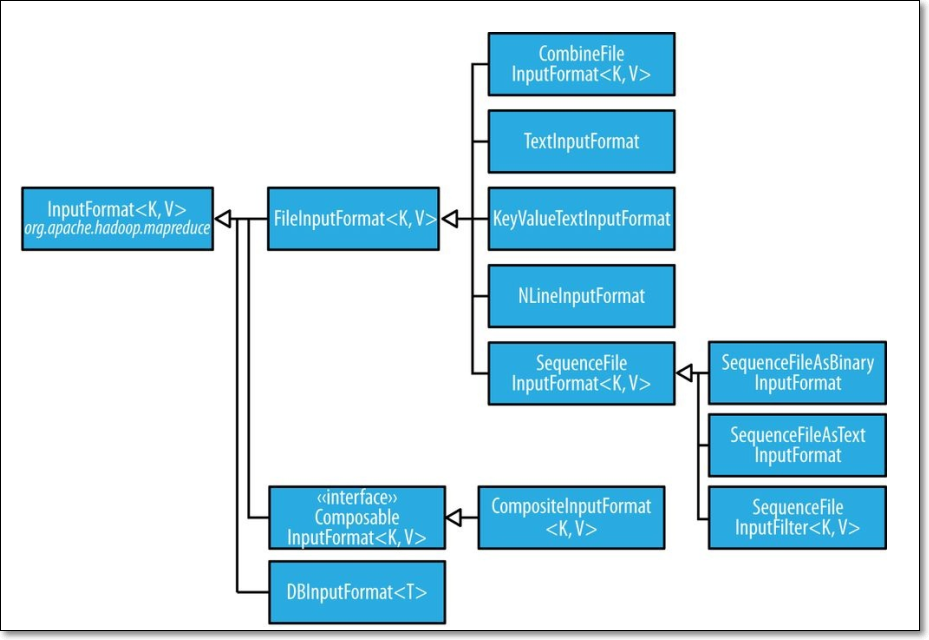